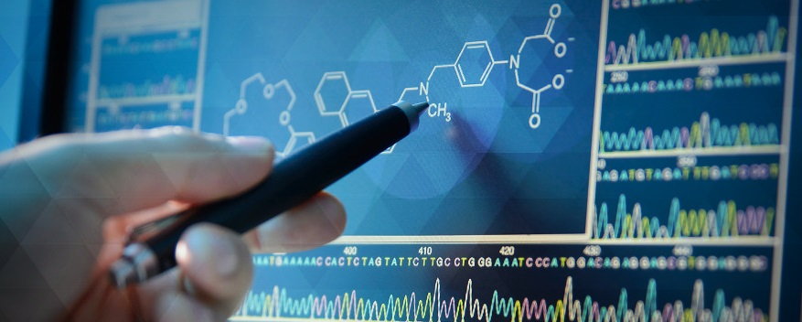

La Bio-Informatique
La bio-informatique, ou bioinformatique, est un champ de recherche multi-disciplinaire de la biotechnologie où travaillent de concert biologistes, médecins, informaticiens, mathématiciens, physiciens et bio-informaticiens, dans le but de résoudre un problème scientifique posé par la biologie.
Plus généralement, la bio-informatique est l'application de la statistique et de l'informatique à la
science biologique. Le spécialiste qui travaille à mi-chemin entre ces sciences et l'informatique est
appelé bio-informaticien ou bionaute.
Le terme bio-informatique peut également décrire, par abus de langage, toutes les applications
informatiques résultant de ces recherches.
L'utilisation du terme bio-informatique est documentée pour la première fois en 1970 dans une
publication de Paulien Hogeweg et Ben Hesper (université d'Utrecht, Pays-Bas), en référence à l'étude
des processus d'information dans les systèmes biotiques.
La bio-informatique est constituée par l'ensemble des concepts et des techniques nécessaires à
l'interprétation informatique de l'information biologique. Plusieurs champs d'application ou
sous-disciplines de la bio-informatique se sont constitués :
- la bio-informatique des séquences, qui traite de l'analyse de données issues de l'information génétique contenue dans la séquence de l'ADN ou dans celle des protéines qu'il code. Cette branche s'intéresse en particulier à l'identification des ressemblances entre les séquences, à l'identification des gènes ou de régions biologiquement pertinentes dans l'ADN ou dans les protéines, en se basant sur l'enchaînement ou séquence de leurs composants élémentaires (nucléotides, acides aminés) ;
- la bio-informatique structurale, qui traite de la reconstruction, de la prédiction ou de l'analyse de la structure 3D ou du repliement des macromolécules biologiques (protéines, acides nucléiques), au moyen d'outils informatiques ;
- la bio-informatique des réseaux, qui s'intéresse aux interactions entre gènes, protéines, cellules, organismes, en essayant d'analyser et de modéliser les comportements collectifs d'ensembles de briques élémentaires du Vivant. Cette partie de la bio-informatique se nourrit en particulier des données issues de technologies d'analyse à haut débit comme la protéomique ou la transcriptomique pour analyser des flux génétiques ou métaboliques ;
- la bio-informatique statistique et la bio-informatique des populations.
Pour certains, la bio-informatique est une branche théorique de la biologie alors que pour d'autres,
elle se situe clairement au carrefour des mathématiques, de l'informatique et de la biologie.
Il s'agit en fait d'analyser, modéliser ou prédire les informations issues de données biologiques
expérimentales.